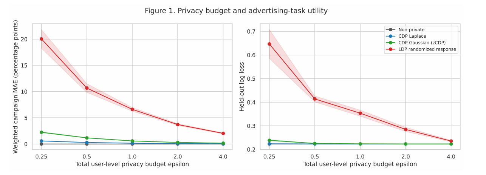

CONFIDENTIALITÉ ET ANALYSE DE DONNÉES
Locale ou centrale ? Étudier la confidentialité différentielle.
J’ai étudié dans quelles conditions la confidentialité différentielle locale pourrait être préférable à la confidentialité différentielle centrale pour mesurer des campagnes publicitaires en ligne.

La question
Comment la protection des données et l’utilité des statistiques publiées varient-elles entre confidentialité différentielle locale et centrale ? J’ai exploré cette question dans un cadre publicitaire synthétique, en faisant varier les budgets de confidentialité, la taille des jeux de données et les taux de clics.

Mon travail
- Simulation de 10 000 utilisateurs et de plus de 88 000 impressions publicitaires réparties sur huit campagnes.
- Implémentation et évaluation de trois mécanismes de confidentialité différentielle en Python.
- Comparaison de la précision, du classement des campagnes et des risques d’inférence d’attributs selon les conditions expérimentales.
Résultats et présentation
J’ai rédigé un article de recherche de plus de 8 000 mots, publié dans le National High School Journal of Science. Ce travail a été encadré par le professeur Andrew Blumberg de Columbia University.
Méthodes et outils
Python · Simulation · Évaluation confidentialité–utilité